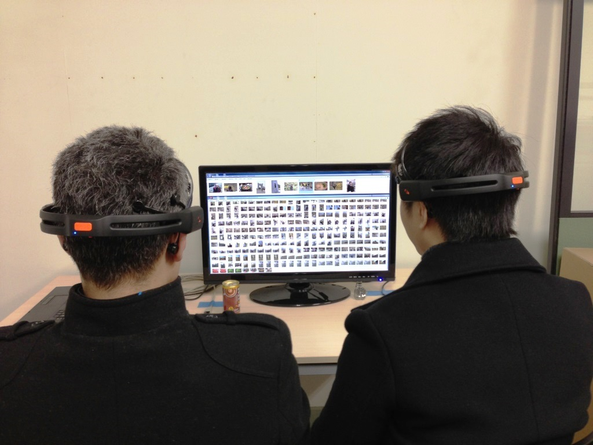
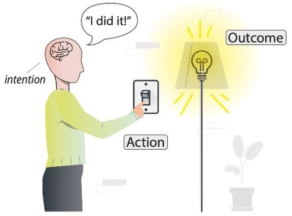

Welcome to my personal website, where I share insights into my research, teaching, and professional achievements. Feel free to explore the various sections to learn more about my work and contributions to the field of Human-Computer Interaction.
I am a lecturer at the School of Computer Science and Engineering, International University (HCMIU), VNU-HCM, Vietnam.
My passion lies in pushing the boundaries of Human-Computer Interaction, aiming to enhance user experiences through innovative multisensory interactions. Whether through research or teaching, I am dedicated to inspiring the next generation of scientists and engineers to think both critically and creatively.
Prior to joining HCMIU, I served as a Research Fellow at the School of Psychology, University of Sussex (2018-2022). Before that, I was a Research Fellow in Multisensory Experiences at the Sussex Human-Computer Interaction (SCHI) Lab, School of Engineering and Informatics, University of Sussex (2015-2018), and a Research Assistant at the Bristol Interaction & Graphics (BIG) Lab, Computer Science Department, University of Bristol (2014-2015).
I earned my PhD in Computer Science in 2014 and an MSc in Advanced Computing: Internet Technologies with Security in 2008, both from the University of Bristol, UK. My academic journey began with a BSc in Electronics and Telecommunications from Hanoi University of Science and Technology, Vietnam, in 2006.
Research Interests
My research interests include Human-Computer Interaction, Brain-Computer Interfaces, Multisensory Experience (taste, smell, and touch), and Experimental Psychology. My work focuses on integrating these elements to develop more immersive and effective user interfaces.
For more information about my work, you can visit my profiles on:
- 🔍 Google Scholar
- 🔍 Scopus
- 🔍 ORCID
Bio
Feb 2023 - Present
Lecturer at the School of Computer Science and Engineering , International University, VNU-HCM, Vietnam.
July 2018 - Dec 2022
Research Fellow at the Sussex Ingestive Behaviour Group , School of Psychology, University of Sussex, Brighton, UK.
July 2015 - July 2018
Research Fellow at the Sussex Computer Human Interaction (SCHI) Lab , School of Engineering and Informatics, University of Sussex, Brighton, UK.
July 2014 - July 2015
Research Assistant at the Bristol Interaction & Graphics (BIG) Lab , Faculty of Engineering, University of Bristol, Bristol, UK.
May 2014 - July 2014
Research Assistant at the SPHERE Group, Faculty of Engineering, University of Bristol, Bristol, UK.
Dec 2012 - May 2013
Research Fellow at the Interactive Content Design (ICD) Lab , Research Institute of Electrical Communication, Tohoku University, Sendai, Japan.
Jan 2009 - Mar 2009
Software Engineer at Toshiba Software Development Vietnam, Hanoi, Vietnam.
Aug 2006 - Dec 2006
System Administrator at BankNetVN, Hanoi, Vietnam.
Jun 2005 - Jun 2006
Research Assistant at R&D Lab, Hanoi University of Science and Technology, Hanoi, Vietnam.
Education
2010 - 2014
PhD in Computer Science (Human-Computer Interaction), University of Bristol, Bristol, UK.
2007 - 2008
MSc in Computer Science (Internet Technology with Security), University of Bristol, Bristol, UK.
2001 - 2006
BSc in Electronics and Telecommunications, Hanoi University of Science and Technology, Hanoi, Vietnam.
Professional Services
ASSOCIATE JOURNAL EDITOR
• International Journal of Human-Computer Studies .
• Frontiers in Human-Media Interaction (Computer Science) .
PROGRAM COMMITTEE MEMBER
• ACM CHI Conference on Human Factors in Computing Systems. Honolulu, Hawaiʻi, USA. ( CHI 2024 )
• The 15th International ACM Conference on Automotive User Interfaces and Interactive Vehicular Applications. Ingolstadt, Germany. ( AutomotiveUI 2023 )
• The 19th IFIP TC.13 International Conference on Human-Computer Interaction. York, UK. ( INTERACT 2023 )
• ACM CHI Conference on Human Factors in Computing Systems. Hamburg, Germany. ( CHI 2023 )
• The 18th IFIP TC.13 International Conference on Human-Computer Interaction. Bari, Italy. ( INTERACT 2021 )
• The 17th IFIP TC.13 International Conference on Human-Computer Interaction. Paphos, Cyprus. ( INTERACT 2019 )
• 3rd International Workshop on Multisensory Approaches to Human-Food Interaction. Boulder, Colorado, USA. ( MHFI 2018 )
• 2nd International Workshop on Multisensory Approaches to Human-Food Interaction. Glasgow, Scotland, United Kingdom. ( MHFI 2017 )
• ACM Multimedia Conference. CA, USA. ( MM 2017 )
• 4th Workshop on Affective Brain-Computer Interaction. ( aBCI 2015 )
• 12th International Conference on Entertainment Computing, São Paulo, Brazil. ( ICEC 2013 )
• 11th International Conference on Entertainment Computing, Tsukuba, Japan. ( ICEC 2012 )
ORGANIZING COMMITTEE MEMBER
• CHI 2016 Workshop on “Touch, Taste, & Smell User Interfaces: The Future of Multisensory HCI”.
CONFERENCE REVIEWING
CHI, UIST, ICMI, DIS, INTERACT, TEI, MM, OzCHI, MobileHCI, UbiComp, ICEC, EICS, 3DUI
JOURNAL REVIEWING
ToCHI, IJHCS, Quality and User Experience, Interacting with Computers
Training Courses & Certificates
• Starting to Teach - University of Sussex
• Statistical Analysis of fMRI Data - Johns Hopkins Bloomberg School of Public Health
• MRI Safety Training - CRICBRistol
• First Aid for Appointed Person - British Red Cross
• SPM course on using Statistical Parametric Mapping - Welcome Trust Centre for Neuroimaging
Honors & Awards
• Best demo award (voted by audience) at ISS 2017.
• Honorable mention paper award (top 5% submissions) at ACE 2013.
• Best paper award (top 1% submissions) at CHI 2012.
Research Themes
My research primarily focuses on the following themes:

Multisensory Interface & Novel Interaction Design
When interacting with computers, we mostly rely on vision, audition, and touch, whilst taste and smell remain largely underexploited. It is essential to determine what tactile, gustatory, and olfactory experiences we can design for, and how we can meaningfully stimulate such experiences when interacting with technology. Importantly, it is vital to understand what the limitations are that come into play when users need to monitor more than one sense at a time.

Brain Computer Interface
A brain computer interface (BCI) is a communication system that allows users to control computers or external devices by detecting and interpreting brain activities. The initial goals of BCI were to help severely disabled people, such as people with "locked-in" syndrome, to communicate with the outside world by interpreting their brain signals into corresponding external commands. Nowadays, state-of-the-art BCIs, especially using Electroencephalography (EEG), bring benefits to normal and healthy computer users in a way that enriches their experiences of everyday Human Computer Interaction (HCI).

Eating Behaviour & Eating Experiences
Eating is one of the fundamental pleasures and one of the most multisensory experiences in everyday life. All of our five senses (i.e., taste, smell, vision, hearing, and touch) are involved, even if we are unaware of them. It has been demonstrated that the perceived eating experience relies on the integration of cues from all human senses, forming the "flavour" of the consumed food. This multisensory aspect of eating leads to an emerging and promising research field in crossmodal correspondences, which investigates the augmentation and modulation of flavour perception through the change of taste and other sensory modalities.

Decision Making & Sense of Agency
The Sense of Agency (SoA) refers to the subjective experience of voluntary control over actions in the external world. It is a critical aspect in human computer interaction as it allows users to say: " I am, who is doing this ". A system without or with a low SoA will discourage users from operating it, preventing the widespread use of the system. Vice versa, a system with high SoA will let users have a similar, or even better, feeling of control in interacting with the system. SoA is important to evaluating novel interfaces, enabling a wider uptake of such systems.
Teaching
I teach a variety of courses related to Computer Science and Human-Computer Interaction. My teaching pedagogy aims to foster a deep understanding of fundamental concepts, promote critical thinking and problem-solving skills, and encourage active engagement with the subject matter. By providing real-world projects and collaborative activities, students can apply theoretical knowledge to practical scenarios, fostering a deeper understanding of concepts. Here are some of the courses I currently offer:
Data Structures and Algorithms
This course provides a comprehensive introduction to data structures and algorithms, which are fundamental concepts in computer science. Students will learn how to design and analyze efficient algorithms, implement various data structures, and apply them to solve real-world problems. Through lectures, programming assignments, and practical exercises, students will develop their problem-solving and programming skills.
Object-Oriented Programming
This course offers a thorough introduction to the principles and practices of Object-Oriented Programming (OOP), a cornerstone of modern software development. Students will learn how to design, implement, and debug object-oriented programs using key concepts such as classes, objects, inheritance, polymorphism, and encapsulation. Through lectures, hands-on coding assignments, and real-world projects, students will build a strong foundation in OOP and enhance their problem-solving and software engineering skills.
Human-Computer Interaction
This course explores the dynamic relationship between humans and computers, focusing on how to design, evaluate, and implement interactive systems that are user-friendly and effective. Students will delve into the principles of user-centered design, usability, and cognitive psychology, learning how to create intuitive interfaces that meet users’ needs. Through lectures, case studies, and hands-on projects, students will gain practical skills in prototyping, usability testing, and applying HCI methodologies to design innovative digital experiences.
User Experience Design
This course provides an in-depth exploration of User Experience (UX) Design, focusing on creating meaningful and engaging interactions between users and digital products. Students will learn how to conduct user research, develop personas, and design intuitive interfaces that prioritize user satisfaction. The course covers key concepts such as usability, information architecture, interaction design, and visual design principles. Through a combination of lectures, hands-on workshops, and real-world projects, students will acquire the skills needed to craft user-centered designs that deliver exceptional experiences.
Digital Signal Processing
This course is an introduction to the basic principles, methods, and applications of digital signal processing, emphasizing its algorithmic, computational, and programming aspects. The objective of this course is to introduce students to fundamental concepts of digital signal processing including sampling and reconstruction, the z-Transform, discrete-time Fourier transforms and their implementations, FIR and IIR digital filtering, multirate signal processing and digital media.
Research Methodology
This course offers a foundational understanding of research methodologies, equipping students with the tools and techniques needed to conduct rigorous academic and professional research. Students will explore various research designs, data collection methods, and analysis techniques, learning how to formulate research questions, develop hypotheses, and critically evaluate sources. The course covers both qualitative and quantitative approaches, emphasizing ethical considerations and the importance of validity and reliability. Through lectures, practical exercises, and research projects, students will gain the skills necessary to design and execute effective research studies.
Publications
My information on Google Scholar, Scopus, and ORCID.
2023
Patricia Cornelio Martinez, Chi Thanh Vi, Giada Brianza, Emmanuela Maggioni, Marianna ObristSmell & Taste-based Interactions enabled through Advances in Digital Technology.
Handbook of Human-Computer Interaction. Springer Nature.
2023
Chi Thanh Vi, Patricia Cornelio, Marianna Obrist, Martin Richard Yeomans
“Sweet: I did it”! Measuring the sense of agency in gustatory interfaces.
Frontiers in Computer Science.
12 May 2023
Rhiannon Mae Armitage, Vasiliki Iatridi, Chi Thanh Vi, Martin Richard Yeomans
Phenotypic differences in taste hedonics: the effects of sweet liking.
Food Quality and Preference.
12 March 2023, 104845
2022
Chi Vi, Patricia Cornelio, Marianna Obrist, Martin YeomansEvaluating the sense of agency for taste in moderate sweet likers.
Appetite.
Volume 179, 2022, 106238
Martin R Yeomans, Chi Vi, Narmeen Mohammed, Rhiannon M Armitage
Re-evaluating how sweet-liking and PROP-tasting are related.
Physiology & Behavior.
Volume 246, 15 March 2022, 113702
Rhiannon M. Armitage, Chi Vi, Martin R. Yeomans
Exploring phenotypic differences in the remembered experience of odours: the effects of sweet liking.
Appetite.
Volume 169, 2022, 105566
Chi Thanh Vi, Lydia Henke, Patricia Cornelio Matinez, Marianna Obrist, Martin Yeomans
Exploring the effect of taste on sense of agency and predictions from eating behaviour.
Appetite.
Volume 169, 2022, 105527
2021
Martin R Yeomans, Thomas Ridley-Siegert, Chi Vi, Hans S.CrombagVisual cues associated with sweet taste increase short-term eating and grab attention in healthy volunteers.
Physiology & Behavior.
Volume 241, 1 November 2021, 113600
Jason Alexander and Chi Thanh Vi
DSP Basics
Intelligent Computing for Interactive System Design: Statistics, Digital Signal Processing, and Machine Learning in Practice (page 105-139).
Association for Computing Machinery. New York, NY, USA
2020
Chi Thanh Vi, Asier Marzo, Dmitrijs Dmitrenko, Martin Yeomans, and Marianna ObristEating Like an Astronaut: How Children Are Willing to Eat “Flying” Food Using Acoustic Levitation.
MHFI'20 October 25–29, 2020, Virtual event, Netherlands.
Companion Publication of the 2020 International Conference on Multimodal Interaction (ICMI ’20 Companion)
Rhiannon Armitage, Chi Vi, Vasiliki Iatridi, Martin R. Yeomans.
Understanding sweet-liker phenotypes: exploring habitual intake of western diet, impulsitivity and childhood eating experience.
Appetite 157 (2020) 104939
Martin Yeomans, Vasiliki Iatridi, Rhiannon Armitage, Chi Thanh Vi
Understanding sweet-liker phenotypes: strong liking for sweetness is associated with higher reward sensitivity but lower adiposity.
International Symposium on Olfaction and Taste (ISOT) 2020
Chi Thanh Vi, Asier Marzo, Gianluca Memoli, Emanuela Maggioni, Damien Ablart, Martin Yeomans, Marianna Obrist
Multisensory Integration in Levitating Food and the Effect of Vision and Smell on Flavour Perception.
International Symposium on Olfaction and Taste (ISOT) 2020
Jenny Morris, Chi Thanh Vi, Marianna Obrist, Sophie Forster, Martin R.Yeomans
Ingested but not perceived: Response to satiety cues disrupted by perceptual load
Appetite. August 2020.
Chi Thanh Vi, Asier Marzo, Gianluca Memoli, Emanuela Maggioni, Damien Ablart, Martin Yeomans, Marianna Obrist
LeviSense: A Platform for the Multisensory Integration in Levitating Food and Insights into its Effect on Flavour Perception
International Journal of Human-Computer Studies (IJHCS). Volume 139, July 2020, 102428.
2018
Chi Thanh Vi, Daniel Arthur, Marianna ObristTasteBud: Bring Taste Back into the Game
3rd ACM SIGCHI International Workshop on Multisensory Approaches to Human-Food Interaction (MHFI'18)
Chi Thanh Vi, Marianna Obrist
Sour Promotes Risk-Taking: An Investigation into the Effect of Taste on Risk-Taking Behaviour in Humans
Nature Scientific Reports, volume 8, article number: 7987
2017
Damien Ablart, Carlos Velasco, Chi Thanh Vi, Elia Gatti, Marianna ObristThe how and why behind a multisensory art display
ACM Magazine Interaction. Volume 24 Issue 6, November + December 2017. Pages 38-43.
Chi Thanh Vi, Damien Ablart, Daniel Arthur, Marianna Obrist
Gustatory Interface: The Challenges of 'How' to Stimulate the Sense of Taste
MHFI'17. Glasgow, UK. 2017.
Chi Thanh Vi, Asier Marzo, Damien Ablart, Gianluca Memoli, Sriram Subramanian, Bruce Drinkwater, Marianna Obrist
TastyFloats: A Contactless Food Delivery System
✭Best Demo Award✭
ACM International Conference on Interactive Surfaces and Spaces (ISS). Brighton, UK. 2017.
Video
Dmitrijs Dmitrenko, Emanuela Maggioni, Chi Thanh Vi, Marianna Obrist
What Did I Sniff? Mapping Scents Onto Driving-Related Messages
AutomotiveUI '17. Oldenburg, Germany, September 24 – 27, 2017
Chi Thanh Vi, Kasper Hornbæk, Sriram Subramanian
Neuroanatomical Correlates of Perceived Usability
ACM Symposium on User Interface Software and Technology (UIST 2017). Quebec, Canada
Video
Chi Thanh Vi, Damien Ablart, Elia Gatti, Calos Velosco, Marianna Obrist
Not just seeing, but also feeling Art: Mid-air Haptic Experiences integrated in a Multisensory Art Exhibition
International Journal of Human-Computer Studies (IJHCS). vol. 108, p. 1-14. December 2017.
Patricia Cornelio Martinez, Silvana De Pirro, Chi Thanh Vi, Sriram Subramanian
Agency in mid-air Interfaces
In proceedings of the ACM CHI Conference on Human Factors in Computing Systems (CHI 2017). Denver. USA
Video
Marianna Obrist, Elia Gatti, Emanuela Maggioni, Chi Thanh Vi, Carlos Velasco
Multisensory Experiences in HCI
In IEEE MultiMedia, vol. 24, no. 2, pp. 9-13, Apr.-June 2017.
2016
Dmitrijs Dmitrenko, Chi Thanh Vi, and Marianna ObristA Comparison of Scent-Delivery Devices and Their Meaningful Use for In-Car Olfactory Interaction
Automotive'UI 16. Ann Arbor, MI, USA
Marianna Obrist, Carlos Velasco, Chi Thanh Vi, Nimesha Ranasinghe, Ali Israr, Adrian Cheok, Charles Spence, Ponnampalam Gopalakrishnakone
Touch, Taste, & Smell User Interfaces: The Future of Multisensory HCI
Proceedings of the 2016 CHI Conference Extended Abstracts on Human Factors in Computing Systems, San Jose, CA, USA
Dmitrijs Dmitrenko, Chi Thanh Vi, Marianna Obrist
A Comparison of Scent-Delivery Devices and their Meaningful Use
CHI'16 Workshop on Touch, Taste, & Smell User Interfaces: The Future of Multisensory HCI, San Jose, CA, USA
Marianna Obrist, Carlos Velasco, Chi Thanh Vi, Nimesha Ranasinghe, Ali Israr, Adrian Cheok, Charles Spence, Ponnampalam Gopalakrishnakone
Sensing the future of HCI: touch, taste, and smell user interfaces
ACM Magazine Interaction. Volume 23 Issue 5, September + October 2016. Pages 40-49
Bo Wan, Chi Thanh Vi, Sriram Subramanian, Diego Martinez Plasencia
Enhancing Interactivity with Transcranial Direct Current Stimulation
International Conference on Intelligent User Interfaces Companion (IUI Companion '16). Sonoma, California. 2016
2015 and earlier
Camille Jeunet, Chi Thanh Vi, Daniel Spelmezan, Bernard Nkaoua, Fabien Lotte, Sriram SubramanianContinuous Tactile Feedback for Motor-Imagery based Brain-Computer Interaction in a Multitasking Context
IFIP International Conference on Human-Computer Interaction (INTERACT 2015). Bamberg, Germany
Video
Chi Thanh Vi, Kazuki Takashima, Hitomi Yokoyama, Gengdai Liu, Yuichi Itoh, Sriram Subramanian, Yoshifumi Kitamura
A Dynamic Flexible and Interactive Display Method of Digital Photographs
Entertainment Computing, November 2014. ISSN 1875-9521
Video
Chi Thanh Vi, Jason Alexander, Pourang Irani, Behrad Babaee, Sriram Subramanian
Quantifying EEG Measured Task Engagement for use in Gaming Applications
University of Bristol. November 2014
Chi Thanh Vi, Izdihar Jamil, David Coyle, Sriram Subramanian
Error Related Negativity in Observing Interactive Tasks
ACM CHI Conference on Human Factors in Computing Systems (CHI 2014), ACM. Toronto, Canada. 2014
Video
Chi Thanh Vi, Kazuki Takashima, Hitomi Yokoyama, Gengdai Liu, Yuichi Itoh, Sriram Subramanian, Yoshifumi Kitamura
D-FLIP: Dynamic & Flexible Interactive PhotoShow
✭Hournorable Mention Paper Award✭ (top 5% submissions)
In proceedings of Advances in Computer Entertainment (ACE 2013). Enschede, Netherlands
Video
Yoshifumi Kitamura, Chi Thanh Vi, Gengdai Liu, Kazuki Takashima, Yuichi Itoh, Sriram Subramanian
D-FLIP: Dynamic & Flexible Interactive PhotoShow
ACM SIGGRAPH Asia Emerging Technologies 2013. Hong Kong, China. 2013
Chi Thanh Vi, Sriram Subramanian
Detecting Error-Related Negativity For Interaction Design
✭Best Paper Award✭ (top 1% submissions)
ACM CHI Conference on Human Factors in Computing Systems (CHI 2012), ACM. Austin, Texas, USA. 2012
Chi Thanh Vi, Sriram Subramanian
Online Single Trial Ern Detection As An Interaction Aid In HCI Applications
CHI 2011 Workshop on Brain and Body Interfaces: Designing for Meaningful Interaction. Vancouver, Canada. 2011
Contact
The best way to contact me is to send an email (below).
- vcthanh@hcmiu.edu.vn
- C.Vi@sussex.ac.uk
- cv7661@my.bristol.ac.uk
- +84 (0)28 37244270
- A1.610, International University.
Quarter 6, Linh Trung Ward, Thu Duc District, HCM City, Vietnam